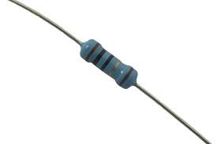

Resistências
-
Uma resistência é um componente elétrico amplamente utilizado na eletrónica, seja para converter energia elétrica em energia térmica pelo efeito Joule, seja para limitar a corrente elétrica num circuito.
- Resistências de Filme de Carbono
- Resistência de Filme de Carbono: O tipo mais comum, utilizado numa ampla gama de aplicações.
- Resistência de Filme de Carbono de Alta Precisão: Possui tolerâncias menores e melhor estabilidade.
- Resistências de Filme Metálico
- Resistência de Filme Metálico: Oferece maior precisão e estabilidade térmica em comparação com os de carbono.
- Resistência de Filme Metálico de Alta Potência: Projetado para dissipar mais calor em aplicações de potência.
- Resistências de Fio
- Resistência de Fio Enrolado: Utilizado em aplicações que exigem alta potência e dissipação de calor.
- Resistência de Fio Bobinado: Utilizado em circuitos de alta voltagem e alta potência.
- Resistências SMD (Surface-Mount Device)
- Resistência SMD de Filme Fino: Utilizado em PCBs para economizar espaço e facilitar a montagem automatizada.
- Resistência SMD de Potência: Designado para aplicações que exigem dissipação de calor em espaços reduzidos.
- Resistências de Óxido Metálico
- Resistência de Óxido Metálico: Combina características de resistências de carbono e metálico, com boa estabilidade e baixo ruído.
- Resistências de Precisão
- Resistência de Precisão: Possui tolerâncias muito apertadas e baixas variações de temperatura e ruído.
- Resistências de Montagem Superficial (SMD) Especiais
- Resistência de Temperatura: Varia a sua resistência com a temperatura, utilizado em circuitos de compensação térmica.
- Resistência Fotossensível: Varia a sua resistência com a luz incidente, utilizado em circuitos de controle de luz.
- Resistência de Chip Dividido: Permite ajuste preciso da resistência após a montagem.
- Resistências Variáveis (Potenciómetros)
- Potenciómetro de Fio: Ajustável manualmente para variar a resistência.
- Potenciómetro de Filme: Utiliza um filme resistivo ajustável.
- Resistências de Chip de Alta Frequência
- Resistência de Chip de Alta Frequência: Projetado para operar eficientemente em frequências elevadas.
- Resistências Shunt
- Resistência Shunt: Utilizado para medir corrente em circuitos, geralmente de baixa resistência.